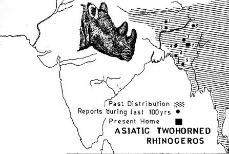

<head>
<meta http-equiv="Content-Type" content="text/html; charset=windows-1252">
<meta name="GENERATOR" content="Microsoft FrontPage 4.0">
<meta name="ProgId" content="FrontPage.Editor.Document">
<title>New Page 1</title>
<meta http-equiv="Content-Type" content="text/html; charset=windows-1252">
<meta name="GENERATOR" content="Microsoft FrontPage 4.0">
<meta name="ProgId" content="FrontPage.Editor.Document">
<title>ECONOMICALLY IMPORTANT PLANTS OF INDIA compiled by K</title>
<meta http-equiv="Content-Type" content="text/html; charset=windows-1252">
<meta name="GENERATOR" content="Microsoft FrontPage 4.0">
<meta name="ProgId" content="FrontPage.Editor.Document">
<title>ECONOMICALLY IMPORTANT PLANTS OF INDIA</title>
<meta http-equiv="Content-Type" content="text/html; charset=windows-1252">
<meta name="GENERATOR" content="Microsoft FrontPage 4.0">
<meta name="ProgId" content="FrontPage.Editor.Document">
<title>New Page 1</title>
<META HTTP-EQUIV="CONTENT-TYPE" CONTENT="text/html; charset=windows-1252">
<TITLE>Aegle marmelos </TITLE>
<META NAME="GENERATOR" CONTENT="Microsoft FrontPage 4.0">
<META NAME="CREATED" CONTENT="20010726;17265013">
<META NAME="CHANGEDBY" CONTENT="L.Sowmya">
<META NAME="CHANGED" CONTENT="20020726;13003551">
<META NAME="DESCRIPTION" CONTENT="Economically Important Plants">
<META NAME="KEYWORDS" CONTENT="Abies pindrow">
<META NAME="ProgId" CONTENT="FrontPage.Editor.Document">
<STYLE>
	<!--
		P { color: #2c9a97 }
	-->
	</STYLE>
<meta name="Microsoft Theme" content="none">
<link>
</head>

<body LANG="en-US" bgcolor="#CCCCCC" text="#009999">
<P><A NAME="begin"></A>
</P>
<table border="1" width="100%">
  <tr>
    <td width="100%" bgcolor="#1658BC">
      <P ALIGN=CENTER><b><font face="Verdana" size="6" color="#FFFFFF">Digitized
      Inventory of Animal Resources: Mammalia&nbsp;</font></b> <font color="#FFFFFF"><br>
      <b>
      Principal Investigator: Dr. R. J. B Alfred, Co-Investigator: Dr. Rama Krishna, Contributed by:
      Dr. M.S.Pradhan</b></font><br>
      </P>
    </td>
  </tr>
</table>
<p ALIGN="CENTER">&nbsp;</p>
<p ALIGN="CENTER">&nbsp;</p>
<P ALIGN=LEFT><b><font size="6" face="Comic Sans MS" color="#009999">&nbsp;&nbsp;&nbsp;&nbsp;&nbsp;&nbsp;&nbsp;&nbsp;&nbsp;&nbsp;&nbsp;&nbsp;&nbsp;&nbsp;&nbsp;&nbsp;&nbsp;&nbsp;&nbsp;</font><font size="6" face="Arial" color="#808000">&nbsp;<a href="http://stp.unipune.ernet.in/zsi/photomap.html?code=99"><b style="mso-bidi-font-weight:normal"><span style="mso-bidi-font-size: 12.0pt; mso-fareast-font-family: Times New Roman; mso-bidi-font-family: Times New Roman; mso-ansi-language: EN-US; mso-fareast-language: EN-US; mso-bidi-language: AR-SA"><i style="mso-bidi-font-style:normal"><span style="mso-ansi-font-size: 9.0pt">Dicerorhinus
sumatrensis</span></i><span style="mso-ansi-font-size: 9.0pt"> (Fischer)</span></span></b></a></font></b></P>
<P ALIGN=LEFT><A HREF="#Taxonomic Details"><FONT FACE="Comic Sans MS">Taxonomic 
  Details</FONT> </A><FONT FACE="Comic Sans MS"><BR>
  ----- </FONT><A HREF="#Scientific Name"><FONT FACE="Comic Sans MS">Scientific Name</FONT></A><FONT FACE="Comic Sans MS"><BR>
  ----- </FONT><A HREF="#Classification"><FONT FACE="Comic Sans MS">Classification</FONT></A><FONT FACE="Comic Sans MS"><BR>
  ----- </FONT><A HREF="#Synonyms"><FONT FACE="Comic Sans MS">Synonyms</FONT></A><FONT FACE="Comic Sans MS"><BR>
  ----- </FONT><A HREF="#Common Names"><FONT FACE="Comic Sans MS">Common Names</FONT></A><FONT FACE="Comic Sans MS"><BR>
  </FONT><A HREF="#Other Biological Details"><FONT FACE="Comic Sans MS">Other 
  Biological Details</FONT></A><FONT FACE="Comic Sans MS"><BR>
  ----- </FONT><A HREF="#Habit and Habitat"><FONT FACE="Comic Sans MS">Habit and 
  Habitat</FONT></A><FONT FACE="Comic Sans MS"><BR>
  ----- </FONT><A HREF="#Distribution"><FONT FACE="Comic Sans MS">Distribution</FONT></A><FONT FACE="Comic Sans MS"><BR>
  ---------- </FONT><A HREF="#Extend of Occurance"><FONT FACE="Comic Sans MS">Extend of
Occurrence</FONT></A><FONT FACE="Comic Sans MS"><BR>
  ---------- </FONT><A HREF="#Area of occurance"><FONT FACE="Comic Sans MS">Area of
</FONT></A><A HREF="#Area of occurance"><font face="Comic Sans MS">occurrence</font></A><FONT FACE="Comic Sans MS"><BR>
  ---------- </FONT><A HREF="#Altitude:"><FONT FACE="Comic Sans MS">Altitude</FONT></A><FONT FACE="Comic Sans MS"><BR>
  ---------- </FONT><A HREF="#Population:"><FONT FACE="Comic Sans MS">Population</FONT></A><FONT FACE="Comic Sans MS"><BR>
  ----- </FONT>
  <A HREF="#Conservation Status:"><FONT FACE="Comic Sans MS">Conservation Status</FONT></A><FONT FACE="Comic Sans MS"><BR>
  ----- </FONT>
  <A HREF="#Diagnostic Features"><FONT FACE="Comic Sans MS">Diagnostic 
  Features</FONT></A><FONT FACE="Comic Sans MS"><BR>
  ----- </FONT>
<a HREF="#Breeding system"><FONT FACE="Comic Sans MS">Breeding system</FONT></a><FONT FACE="Comic Sans MS"><BR>
  </FONT><A HREF="#Miscellaneous Information"><FONT FACE="Comic Sans MS">Miscellaneous 
  Information</FONT></A><FONT FACE="Comic Sans MS"><BR>
  </FONT><A HREF="#Literature"><FONT FACE="Comic Sans MS">Literature</FONT></A></P>
<HR SIZE=3 COLOR="#0000ff">
<P><A NAME="Taxonomic Details"></A><FONT SIZE=6><FONT FACE="Monotype Corsiva"><FONT COLOR="#1658bc"><u>Taxonomic 
  Details</u></FONT></FONT></FONT> </P>
<HR SIZE=3 COLOR="#0000ff">
<P><A NAME="Scientific Name"></A><A NAME="Classification"></A><A NAME="Synonyms"></A><A NAME="Common Names"></A> 
  <FONT FACE="Comic Sans MS, sans-serif"><U>Scientific Name</U> :&nbsp;</FONT><font face="Comic Sans MS, sans-serif">&nbsp;</font><b><font size="6" face="Arial" color="#808000">&nbsp;</font><a href="http://stp.unipune.ernet.in/zsi/photomap.html?code=99"><b style="mso-bidi-font-weight:normal"><span style="mso-bidi-font-size: 12.0pt; mso-fareast-font-family: Times New Roman; mso-bidi-font-family: Times New Roman; mso-ansi-language: EN-US; mso-fareast-language: EN-US; mso-bidi-language: AR-SA; mso-bidi-font-weight: normal; mso-ansi-font-size: 9.0pt"><i style="mso-bidi-font-style:normal"><font color="#808000"><span><span style="mso-ansi-font-size: 9.0pt; mso-bidi-font-size: 12.0pt; mso-fareast-font-family: Times New Roman; mso-bidi-font-family: Times New Roman; mso-ansi-language: EN-US; mso-fareast-language: EN-US; mso-bidi-language: AR-SA; mso-bidi-font-weight: normal"><font face="Arial" size="5">Dicerorhinus
sumatrensis</font></span></span></font></i><font color="#808000"><span><font face="Arial" size="5"><span style="mso-ansi-font-size: 9.0pt; mso-bidi-font-size: 12.0pt; mso-fareast-font-family: Times New Roman; mso-bidi-font-family: Times New Roman; mso-ansi-language: EN-US; mso-fareast-language: EN-US; mso-bidi-language: AR-SA; mso-bidi-font-weight: normal">
(Fischer)</span></font></span></font></span></b></a></b></P>
<P><font face="Comic Sans MS" size="3"><U>Classification</U><b><U>:</U></b></font></P>
<blockquote>
  <blockquote>
    <blockquote>
      <blockquote>
        <blockquote>
          <blockquote>
<P><font size="4"><span style="mso-bidi-font-size: 12.0pt; color: black"><span style="mso-bidi-font-size: 12.0pt; font-family: Verdana; color: black">Order:<i style="mso-bidi-font-style:normal">Perissodactyla</i></span><o:p>
</o:p>
</span></font></P>
            <span style="mso-bidi-font-size: 12.0pt; font-family: Verdana; mso-fareast-font-family: Times New Roman; mso-bidi-font-family: Times New Roman; color: black; mso-ansi-language: EN-US; mso-fareast-language: EN-US; mso-bidi-language: AR-SA"><font size="4">Family:</font><i style="mso-bidi-font-style:normal"><font size="4">Rhinocerotidae</font></i></span>
          </blockquote>
        </blockquote>
      </blockquote>
    </blockquote>
  </blockquote>
</blockquote>
<P><font face="Comic Sans MS, sans-serif" size="3">
  <U>Synonyms</U>:&nbsp;&nbsp;&nbsp;&nbsp;&nbsp;&nbsp;&nbsp;&nbsp;&nbsp;&nbsp;&nbsp;&nbsp;&nbsp;&nbsp;&nbsp;
</font><i style="mso-bidi-font-style:
normal"><span style="font-size:9.0pt;mso-bidi-font-size:12.0pt;font-family:
Verdana;color:black">Didermoceros sumatrensis, (Fischer) Rhinoceros lasiotis,
Bunckland</span></i><span style="font-size:9.0pt;mso-bidi-font-size:12.0pt;
font-family:Verdana;color:black"> </span><span style="font-size:10.0pt;mso-bidi-font-size:12.0pt;
color:black"><o:p>
</o:p>
</span></P>
<P><font face="Comic Sans MS, sans-serif" size="3"><BR>
  <U>Common Names</U><SPAN STYLE="text-decoration: none">:&nbsp;</SPAN></font><FONT FACE="Comic Sans MS, sans-serif"><SPAN STYLE="text-decoration: none">&nbsp;&nbsp;&nbsp;&nbsp;&nbsp;&nbsp;</SPAN></FONT><span style="font-size:9.0pt;
mso-bidi-font-size:12.0pt;font-family:Verdana;color:black">Asian Two Horned or
Sumatran Rhinoceros</span><span style="font-size:9.0pt;mso-bidi-font-size:12.0pt;
font-family:Verdana;mso-fareast-font-family:&quot;Arial Unicode MS&quot;;color:black"><o:p>
</o:p>
</span>
</P>
<p class="MsoNormal"><span style="font-size:10.0pt;mso-bidi-font-size:12.0pt;
color:black">&nbsp;</span><span style="font-size:9.0pt;mso-bidi-font-size:12.0pt;font-family:
Verdana;color:black"><i style="mso-bidi-font-style:
normal">&nbsp;&nbsp;&nbsp;</i></span><span style="font-size: 10.0pt; mso-bidi-font-size: 12.0pt; color: black"><i style="font-size: 10.0pt; mso-bidi-font-size: 12.0pt; color: black">&nbsp;&nbsp;&nbsp;&nbsp;&nbsp;&nbsp;&nbsp;&nbsp;&nbsp;&nbsp;&nbsp;&nbsp;&nbsp;&nbsp;&nbsp;&nbsp;&nbsp;&nbsp;&nbsp;&nbsp;&nbsp;&nbsp;&nbsp;&nbsp;&nbsp;&nbsp;&nbsp;&nbsp;&nbsp;&nbsp;&nbsp;&nbsp;&nbsp;&nbsp;&nbsp;&nbsp;&nbsp;&nbsp;&nbsp;&nbsp;&nbsp;&nbsp;&nbsp;&nbsp;
</i></span><span style="font-size:9.0pt;mso-bidi-font-size:12.0pt;font-family:
Verdana;color:black"><i style="mso-bidi-font-style:
normal">Regional Names:</i></span><span style="font-size:9.0pt;
mso-bidi-font-size:12.0pt;font-family:Verdana;color:black">&nbsp;Assamese: Garh</span><span style="font-size:9.0pt;mso-bidi-font-size:12.0pt;font-family:Verdana;
mso-fareast-font-family:&quot;Arial Unicode MS&quot;;color:black"><o:p>
</o:p>
</span></p>
<p class="MsoNormal"><span style="font-size:10.0pt;mso-bidi-font-size:12.0pt;
color:black">&nbsp;<o:p>
</o:p>
</span></p>
<P><FONT FACE="Comic Sans MS, sans-serif"><SPAN STYLE="text-decoration: none">
<b><font size="4" color="#000000">
  <BR>
</font></b>
  </SPAN></FONT><font face="Comic Sans MS"><BR>
  </font><BR>
</P>
<P ALIGN=RIGHT><A HREF="#begin"><U><FONT FACE="Comic Sans MS">Back to
Top</FONT></U></A></P>
<HR SIZE=3 COLOR="#0000ff">
<P><A NAME="Other Biological Details"></A><FONT SIZE=3><FONT SIZE=6><FONT FACE="Monotype Corsiva"><FONT COLOR="#1658bc"><u>Other 
  Biological Details</u></FONT></FONT></FONT></FONT> 
</P>
<p class="MsoNormal" style="text-align:justify"><i style="mso-bidi-font-style:
normal"><span style="font-size:9.0pt;mso-bidi-font-size:12.0pt;font-family:
Verdana;color:black">Threats:&nbsp;</span></i><span style="font-size:9.0pt;
mso-bidi-font-size:12.0pt;font-family:Verdana;color:black"> Habitat
Fragmentation, Agriculture and Farming, Human Interference, Loss of Habitat,
Trade, Hunting, Insurgency, Corridor loss etc.;&nbsp;<i style="mso-bidi-font-style:
normal">Effect of threats on population (Perceived or inferred)</i>:&nbsp;Declining</span><span style="font-size:10.0pt;mso-bidi-font-size:12.0pt;
color:black">&nbsp;<o:p>
</o:p>
</span></p>
<p class="MsoNormal" style="text-align:justify"><i style="mso-bidi-font-style:
normal"><span style="font-size:9.0pt;mso-bidi-font-size:12.0pt;font-family:
Verdana;color:black">Trade:&nbsp;</span></i><span style="font-size:9.0pt;
mso-bidi-font-size:12.0pt;font-family:Verdana;color:black"> Local and Domestic;&nbsp;<i style="mso-bidi-font-style:normal">Parts
in trade</i>:&nbsp;Horn;&nbsp;<i style="mso-bidi-font-style:normal">Effect of
trade on population (Perceived or inferred)</i>:&nbsp;Declining</span><span style="font-size:9.0pt;mso-bidi-font-size:
12.0pt;font-family:Verdana;mso-fareast-font-family:&quot;Arial Unicode MS&quot;;
color:black"><o:p>
</o:p>
</span></p>
<P>&nbsp; 
</P>
<HR SIZE=3 COLOR="#0000ff">
<P STYLE="margin-bottom: 0cm"><A NAME="Habit and Habitat"></A><U><FONT FACE="Comic Sans MS">HABIT 
  &amp; HABITAT</FONT></U></P>
<P STYLE="margin-bottom: 0cm"><FONT FACE="Comic Sans MS"><span style="font-size:9.0pt;mso-bidi-font-size:12.0pt;
font-family:Verdana;mso-fareast-font-family:&quot;Times New Roman&quot;;mso-bidi-font-family:
&quot;Times New Roman&quot;;color:black;mso-ansi-language:EN-US;mso-fareast-language:
EN-US;mso-bidi-language:AR-SA">The Sumatran rhino prefers to live in well wooded
wet tropical green forests on a hilly tact. It can go upto the elevation of
almost 2000 m in summer, while it can descend down to the lower marshy and
grassy areas in monsoon and winter seasons. It always prefers shade and water.
It is basically a browser and includes in its diet variety of vegetations. It
lives singly or in pair. It is a shy and timid animal. Little is known about its
breeding season and habits. But it is known that a calf is born at a time and it
lives with the mother for fairly long time.</span></FONT></P>
<P STYLE="margin-bottom: 0cm"><FONT FACE="Comic Sans MS"><span style="font-size:9.0pt;mso-bidi-font-size:12.0pt;
font-family:Verdana;mso-fareast-font-family:&quot;Times New Roman&quot;;mso-bidi-font-family:
&quot;Times New Roman&quot;;color:black;mso-ansi-language:EN-US;mso-fareast-language:
EN-US;mso-bidi-language:AR-SA"><i style="mso-bidi-font-style:normal"><span style="font-size:9.0pt;mso-bidi-font-size:12.0pt;font-family:Verdana;
mso-fareast-font-family:&quot;Times New Roman&quot;;mso-bidi-font-family:&quot;Times New Roman&quot;;
color:black;mso-ansi-language:EN-US;mso-fareast-language:EN-US;mso-bidi-language:
AR-SA">Habitat Structure:</span></i><span style="font-size:9.0pt;mso-bidi-font-size:
12.0pt;font-family:Verdana;mso-fareast-font-family:&quot;Times New Roman&quot;;
mso-bidi-font-family:&quot;Times New Roman&quot;;color:black;mso-ansi-language:EN-US;
mso-fareast-language:EN-US;mso-bidi-language:AR-SA">&nbsp;The Sumatran rhino
prefers to live in grassy and marshy areas within thickly forested inaccessible
hilly tracts. The Forest type is mostly wet tropical forests. There is a change
in the Habitat structure. It has decreased to the extent of almost &gt;50%
during last 50 years.</span></span></FONT><font face="Comic Sans MS" size="3"><b>&nbsp;&nbsp;&nbsp;&nbsp;&nbsp;&nbsp;&nbsp;&nbsp;&nbsp;&nbsp;&nbsp;&nbsp;&nbsp;</b></P>
</font>
<p>&nbsp;</p>
<p align=RIGHT style="margin-bottom: 0cm"><font face="Comic Sans MS" size="3"><a href="#begin">Back 
  to Top</a></font></p>
<P STYLE="margin-bottom: 0cm">&nbsp;</P>
<P><font size="3"><A NAME="Distribution"></A><A NAME="Extend of Occurance"></A><A NAME="Area of occurance:"></A><A NAME="Altitude:"></A><A NAME="Population:"></a><A NAME="Conservation status:"></A> 
  <FONT FACE="Comic Sans MS"><U>Distribution</U>:</FONT></font></P>
<p class="MsoNormal" style="text-align:justify"><span style="font-size:9.0pt;
mso-bidi-font-size:12.0pt;font-family:Verdana;color:black">Manipur and Nagaland
in India.The former distribution of the species was wide extending from Eastern
India (Assam) to Indonaesia through Myanmar. However the species is now
struggling for survival in few pockets in the subcontinent due to persistant
threats. Sumatran rhino's presence has been reported in Manipur and Nagaland
along India -Myanmar border on some occassions during last 40 years.&nbsp;</span></p>
<p class="MsoNormal" style="text-align:justify"><i style="mso-bidi-font-style:normal"><span style="font-size:9.0pt;mso-bidi-font-size:12.0pt;font-family:Verdana;
mso-fareast-font-family:&quot;Times New Roman&quot;;mso-bidi-font-family:&quot;Times New Roman&quot;;
color:black;mso-ansi-language:EN-US;mso-fareast-language:EN-US;mso-bidi-language:
AR-SA">No.of Locations:&nbsp;</span></i><span style="font-size:9.0pt;
mso-bidi-font-size:12.0pt;font-family:Verdana;mso-fareast-font-family:&quot;Times New Roman&quot;;
mso-bidi-font-family:&quot;Times New Roman&quot;;color:black;mso-ansi-language:EN-US;
mso-fareast-language:EN-US;mso-bidi-language:AR-SA">Two in Indian regions;&nbsp;<i style="mso-bidi-font-style:normal">Type:&nbsp;</i>Isolated</span></p>
<P><font face="Comic Sans MS" size="3"><U>Extent of </U><u>Occurrence&nbsp;&nbsp;&nbsp;</u>&nbsp;&nbsp;&nbsp;&nbsp;&nbsp;&nbsp;&nbsp;&nbsp;&nbsp;&nbsp;&nbsp;&nbsp;
<span style="font-size:9.0pt;mso-bidi-font-size:12.0pt;
font-family:Verdana;mso-fareast-font-family:&quot;Times New Roman&quot;;mso-bidi-font-family:
&quot;Times New Roman&quot;;color:black;mso-ansi-language:EN-US;mso-fareast-language:
EN-US;mso-bidi-language:AR-SA">501-2000 sq.kms.</span><BR>
  </font><font size="3"><BR>
  </font></P>
<P STYLE="margin-bottom: 0cm"><font face="Comic Sans MS" size="3"><U>Area of occurrence:&nbsp;&nbsp;&nbsp;</U>&nbsp;&nbsp;&nbsp;&nbsp;&nbsp;&nbsp;&nbsp;&nbsp;&nbsp;&nbsp;&nbsp;&nbsp;&nbsp;&nbsp;&nbsp;&nbsp;
<span style="font-size:9.0pt;mso-bidi-font-size:12.0pt;
font-family:Verdana;mso-fareast-font-family:&quot;Times New Roman&quot;;mso-bidi-font-family:
&quot;Times New Roman&quot;;color:black;mso-ansi-language:EN-US;mso-fareast-language:
EN-US;mso-bidi-language:AR-SA">101-500 sq.kms.</span> 
  </font></P>
<P STYLE="margin-bottom: 0cm"><font face="Comic Sans MS" size="3"><U>Altitude:</U></font><font color="#000000" face="Comic Sans MS" size="4">&nbsp;&nbsp;&nbsp;&nbsp;&nbsp;&nbsp;&nbsp;&nbsp;&nbsp;&nbsp;&nbsp;&nbsp;&nbsp;&nbsp;&nbsp;&nbsp;&nbsp;&nbsp;&nbsp;&nbsp;&nbsp;&nbsp;&nbsp;&nbsp;&nbsp;&nbsp;&nbsp;&nbsp;&nbsp;
<span style="font-size:9.0pt;
mso-bidi-font-size:12.0pt;font-family:Verdana;color:black">less than 2000m</span><span style="font-size:9.0pt;mso-bidi-font-size:12.0pt;font-family:Verdana;
mso-fareast-font-family:&quot;Arial Unicode MS&quot;;color:black"><o:p>
</o:p>
</span></font><font face="Comic Sans MS" size="3"><BR>
  <BR>
  <U>Population:</U>&nbsp; </font></P>
<p class="MsoNormal" style="text-align:justify"><i style="mso-bidi-font-style:
normal"><span style="font-size:9.0pt;mso-bidi-font-size:12.0pt;font-family:
Verdana;color:black">:&nbsp;</span></i><span style="font-size:9.0pt;mso-bidi-font-size:
12.0pt;font-family:Verdana;color:black"> <i style="mso-bidi-font-style:normal">Global
Population:&nbsp;</i>100+ (Mukherjee, 1982);&nbsp;<i style="mso-bidi-font-style:
normal">No.of mature individuals in all the populations:&nbsp;</i>Not known</span><span style="font-size:10.0pt;mso-bidi-font-size:12.0pt;
color:black">&nbsp;<o:p>
</o:p>
</span></p>
<p class="MsoNormal" style="text-align:justify"><i style="mso-bidi-font-style:
normal"><span style="font-size:9.0pt;mso-bidi-font-size:12.0pt;font-family:
Verdana;color:black">Captive Population:&nbsp;</span></i><span style="font-size:9.0pt;mso-bidi-font-size:12.0pt;font-family:Verdana;
color:black">None in India. Males: 6 + Females: 12 = Total: 18 in 7 Zoos abroad
(CAMP, 1998).</span><span style="font-size:10.0pt;mso-bidi-font-size:12.0pt;
color:black">&nbsp;<o:p>
</o:p>
</span></p>
<p class="MsoNormal" style="text-align:justify"><i style="mso-bidi-font-style:
normal"><span style="font-size:9.0pt;mso-bidi-font-size:12.0pt;font-family:
Verdana;color:black">Life span:&nbsp;</span></i><span style="font-size:9.0pt;
mso-bidi-font-size:12.0pt;font-family:Verdana;color:black"> (Wild):&nbsp;Not
Known;&nbsp;(Captivity):&nbsp;Not Known</span><span style="font-size:10.0pt;mso-bidi-font-size:12.0pt;
color:black">&nbsp;<o:p>
</o:p>
</span></p>
<p class="MsoNormal" style="text-align:justify"><i style="mso-bidi-font-style:
normal"><span style="font-size:9.0pt;mso-bidi-font-size:12.0pt;font-family:
Verdana;color:black">Population Trend:&nbsp;</span></i><span style="font-size:
9.0pt;mso-bidi-font-size:12.0pt;font-family:Verdana;color:black">Declined to the
extent of &gt; 50% in last 50 years.</span></p>
<P STYLE="margin-bottom: 0cm"><font face="Comic Sans MS" size="3"><U>Conservation status:&nbsp;&nbsp;&nbsp;</U>&nbsp;&nbsp;&nbsp;&nbsp;&nbsp;&nbsp;&nbsp;&nbsp;&nbsp;&nbsp;&nbsp;&nbsp;&nbsp;
<span style="font-size:9.0pt;
mso-bidi-font-size:12.0pt;font-family:Verdana;color:black">Non-Endemic species</span><span style="font-size:9.0pt;mso-bidi-font-size:12.0pt;font-family:Verdana;
mso-fareast-font-family:&quot;Arial Unicode MS&quot;;color:black"><o:p>
</o:p>
</span>&nbsp;&nbsp; <b style="mso-bidi-font-weight:normal"><span style="font-size:9.0pt;mso-bidi-font-size:12.0pt;font-family:Verdana;
mso-fareast-font-family:&quot;Times New Roman&quot;;mso-bidi-font-family:&quot;Times New Roman&quot;;
color:black;mso-ansi-language:EN-US;mso-fareast-language:EN-US;mso-bidi-language:
AR-SA">Critically Endangered</span></b><BR>

<i style="mso-bidi-font-style:
normal"><span style="font-size:9.0pt;mso-bidi-font-size:12.0pt;font-family:
Verdana;color:black">CITES APPENDIX:</span></i><span style="font-size:9.0pt;
mso-bidi-font-size:12.0pt;font-family:Verdana;color:black">&nbsp;Not Listed;&nbsp;<i style="mso-bidi-font-style:normal">Indian
Wildlife (Protection) Act (1972) (As ammended upto 2002):</i>&nbsp;Schedule Not
Listed;&nbsp;Part ;&nbsp;<i style="mso-bidi-font-style:normal">Indian Red Data
Book (IUCN, 1994):</i>&nbsp;Not Listed;&nbsp;<i style="mso-bidi-font-style:normal">IUCN
(1998)</i> (Proposed):&nbsp;Critically Endangered (National) and Data Deficient
(Global);&nbsp;<i style="mso-bidi-font-style:normal">IUCN (2002)</i> (Proposed):&nbsp;Critically
Endangered (Global) based on Version 2.3 1994 (IUCN, 2003).;&nbsp;</span><span style="font-size:9.0pt;mso-bidi-font-size:
12.0pt;font-family:Verdana;mso-fareast-font-family:&quot;Arial Unicode MS&quot;;
color:black"><o:p>
</o:p>
</span>

  <BR>
<span style="mso-tab-count:1">&nbsp;&nbsp;&nbsp;&nbsp;&nbsp;&nbsp;&nbsp;&nbsp;&nbsp; </span>
<P STYLE="margin-bottom: 0cm"><font face="Comic Sans MS" size="3"><A NAME="Diagnostic Features"></A><A NAME="Breeding system"></A><U>DIAGNOSTIC 
  FEATURES</U>:</font></font></P>

<p class="MsoNormal" style="text-align:justify"><i style="mso-bidi-font-style:
normal"><span style="font-size:9.0pt;mso-bidi-font-size:12.0pt;font-family:
Verdana;color:black">:</span></i><span style="font-size:9.0pt;mso-bidi-font-size:
12.0pt;font-family:Verdana;color:black">&nbsp;All rhinoceros species belong to
the mammalian order of odd toed hoofed ungulate, Perissodactyla. The Asian Two
Horned or Sumatran Rhinoceros possesses horns on the snout. Sumatran rhino
possesses two horns on its snout. Front horn above the nostril is about 80cm
high, while the second horn above the eye is shorter than the first one. Female
also possesses horns. It has single pair of lower frontal teeth. The skin folds
are weak. The body is covered with bristles visible throughout life . The base
coat colour is earthy brown. Ears small and pointed, edged with thick hairs.
Tail covered with long hairs. Skin granular.</span><span style="font-size:10.0pt;mso-bidi-font-size:12.0pt;
color:black">&nbsp;<o:p>
</o:p>
</span></p>
<p class="MsoNormal" style="text-align:justify"><i style="mso-bidi-font-style:
normal"><span style="font-size:9.0pt;mso-bidi-font-size:12.0pt;font-family:
Verdana;color:black">Measurements:</span></i><span style="font-size:9.0pt;
mso-bidi-font-size:12.0pt;font-family:Verdana;color:black">&nbsp;(In cm): Head
and Body Length: 250cm; Girth: 215cm; Height at shoulder: 135cm; Front Horn
Length: 80cm.</span><span style="font-size:10.0pt;mso-bidi-font-size:12.0pt;
color:black">&nbsp;<o:p>
</o:p>
</span></p>
<p class="MsoNormal" style="text-align:justify"><i style="mso-bidi-font-style:
normal"><span style="font-size:9.0pt;mso-bidi-font-size:12.0pt;font-family:
Verdana;color:black">Weight:</span></i><span style="font-size:9.0pt;mso-bidi-font-size:
12.0pt;font-family:Verdana;color:black">&nbsp;Not Available.</span><span style="font-size:9.0pt;mso-bidi-font-size:12.0pt;font-family:Verdana;
mso-fareast-font-family:&quot;Arial Unicode MS&quot;;color:black"><o:p>
</o:p>
</span></p>
<font face="Comic Sans MS" size="3">

  <U>Breeding system:</U></font>
<p>&nbsp;</p>
<P ALIGN=RIGHT><A HREF="#begin"><FONT FACE="Comic Sans MS">Back to
Top</FONT></A><FONT FACE="Comic Sans MS"> </FONT>
</P>
<HR SIZE=3 COLOR="#0000ff">
<P><A NAME="Miscellaneous Information2"></A><A NAME="Miscellaneous Information1"></A>
 <FONT SIZE=6><FONT FACE="Monotype Corsiva"><FONT COLOR="#1658bc">
<U>Miscellaneous
Information</U>&nbsp;&nbsp;</FONT></FONT></FONT>
</P>
<p class="MsoNormal"><span style="font-size:10.0pt;mso-bidi-font-size:12.0pt;
color:black">&nbsp;</span><i style="mso-bidi-font-style:normal"><span style="font-size:9.0pt;mso-bidi-font-size:
12.0pt;font-family:Verdana;mso-fareast-font-family:&quot;Times New Roman&quot;;
mso-bidi-font-family:&quot;Times New Roman&quot;;color:black;mso-ansi-language:EN-US;
mso-fareast-language:EN-US;mso-bidi-language:AR-SA">Intraspecific variations:</span></i><span style="font-size:9.0pt;mso-bidi-font-size:12.0pt;font-family:Verdana;
mso-fareast-font-family:&quot;Times New Roman&quot;;mso-bidi-font-family:&quot;Times New Roman&quot;;
color:black;mso-ansi-language:EN-US;mso-fareast-language:EN-US;mso-bidi-language:
AR-SA">&nbsp;None in the region</span></p>
<P><i style="mso-bidi-font-style:normal"><span style="font-size:9.0pt;mso-bidi-font-size:12.0pt;font-family:Verdana;
mso-fareast-font-family:&quot;Times New Roman&quot;;mso-bidi-font-family:&quot;Times New Roman&quot;;
color:black;mso-ansi-language:EN-US;mso-fareast-language:EN-US;mso-bidi-language:
AR-SA">Sighting Records:&nbsp;</span></i><span style="font-size:9.0pt;
mso-bidi-font-size:12.0pt;font-family:Verdana;mso-fareast-font-family:&quot;Times New Roman&quot;;
mso-bidi-font-family:&quot;Times New Roman&quot;;color:black;mso-ansi-language:EN-US;
mso-fareast-language:EN-US;mso-bidi-language:AR-SA"> <i style="mso-bidi-font-style:
normal">Type of Sighting:</i>&nbsp;Direct and Indirect;&nbsp;<i style="mso-bidi-font-style:normal">Field
Notes:</i>&nbsp;Direct/Indirect sighting records in 1996 reported in Manipur and
Nagaland by A. Choudhury (1997).&nbsp;</span>
</P>
<p class="MsoNormal" style="text-align:justify"><i style="mso-bidi-font-style:
normal"><span style="font-size:9.0pt;mso-bidi-font-size:12.0pt;font-family:
Verdana;color:black">Taxon related studies recommended:&nbsp;</span></i><span style="font-size:9.0pt;mso-bidi-font-size:12.0pt;font-family:Verdana;
color:black">Ex-situ survey, Monitoring, Conservation strategy studies etc.</span><span style="font-size:10.0pt;mso-bidi-font-size:12.0pt;
color:black">&nbsp;<o:p>
</o:p>
</span></p>
<p class="MsoNormal" style="text-align:justify"><i style="mso-bidi-font-style:
normal"><span style="font-size:9.0pt;mso-bidi-font-size:12.0pt;font-family:
Verdana;color:black">Remarks:&nbsp;</span></i><span style="font-size:9.0pt;
mso-bidi-font-size:12.0pt;font-family:Verdana;color:black">The species was
thought to be extinct in India until 1996. Choudhury (1997) established its
presence in Manipur and Nagaland. These few and isolated populations must be
given the strictest protection by declaring these areas as national parks.
Further, the species should be brought under Schedule I part I of Indian
Wildlife Protection Act to offer complete protection to the species in India.</span><span style="font-size:9.0pt;mso-bidi-font-size:12.0pt;font-family:Verdana;
mso-fareast-font-family:&quot;Arial Unicode MS&quot;;color:black"><o:p>
</o:p>
</span></p>
<P>&nbsp;
</P>
<font face="Comic Sans MS" size="3">
<p class="MsoNormal" style="margin-left:1.0in;text-align:justify;text-indent:
-1.0in"><span style="mso-spacerun: yes">&nbsp;&nbsp;</span><span style="mso-tab-count:1">&nbsp;&nbsp;&nbsp;&nbsp;&nbsp;&nbsp;&nbsp;</span>&nbsp;&nbsp;&nbsp;<span style="mso-tab-count: 1">&nbsp;
</span></p>
</font>
<HR SIZE=3 COLOR="#0000ff">
<blockquote>
  <blockquote>
    <blockquote>
      <blockquote>
        <blockquote>
          <blockquote>
<P><font face="Comic Sans MS"><span style="font-size:9.0pt;mso-bidi-font-size:12.0pt;
font-family:Verdana;mso-fareast-font-family:&quot;Times New Roman&quot;;mso-bidi-font-family:
&quot;Times New Roman&quot;;color:black;mso-ansi-language:EN-US;mso-fareast-language:
EN-US;mso-bidi-language:AR-SA"><!--[if gte vml 1]><v:shapetype id="_x0000_t75"
 coordsize="21600,21600" o:spt="75" o:preferrelative="t" path="m@4@5l@4@11@9@11@9@5xe"
 filled="f" stroked="f">
 <v:stroke joinstyle="miter"/>
 <v:formulas>
  <v:f eqn="if lineDrawn pixelLineWidth 0"/>
  <v:f eqn="sum @0 1 0"/>
  <v:f eqn="sum 0 0 @1"/>
  <v:f eqn="prod @2 1 2"/>
  <v:f eqn="prod @3 21600 pixelWidth"/>
  <v:f eqn="prod @3 21600 pixelHeight"/>
  <v:f eqn="sum @0 0 1"/>
  <v:f eqn="prod @6 1 2"/>
  <v:f eqn="prod @7 21600 pixelWidth"/>
  <v:f eqn="sum @8 21600 0"/>
  <v:f eqn="prod @7 21600 pixelHeight"/>
  <v:f eqn="sum @10 21600 0"/>
 </v:formulas>
 <v:path o:extrusionok="f" gradientshapeok="t" o:connecttype="rect"/>
 <o:lock v:ext="edit" aspectratio="t"/>
</v:shapetype><v:shape id="_x0000_i1025" type="#_x0000_t75" alt="Map" style='width:335.25pt;
 height:225pt' fillcolor="window">
 <v:imagedata src="Mammal28.jpg"
  o:href="http://stp.unipune.ernet.in/zsi/images/maps/map99.jpg"/>
</v:shape><![endif]-->
</span><br>
<i style="mso-bidi-font-style:
normal"><span style="font-size:9.0pt;mso-bidi-font-size:12.0pt;font-family:
Verdana;color:black">Map Source</span></i><span style="font-size:9.0pt;
mso-bidi-font-size:12.0pt;font-family:Verdana;color:black">: A. K. Mukherjee
(1982) and A. Choudhury (1996)</span><span style="font-size:9.0pt;mso-bidi-font-size:
12.0pt;font-family:Verdana;mso-fareast-font-family:&quot;Arial Unicode MS&quot;;
color:black"><o:p>
</o:p>
</span>
  </font></P>
          </blockquote>
        </blockquote>
      </blockquote>
    </blockquote>
  </blockquote>
</blockquote>
<P><font size="3"><BR>
  </font><BR>
&nbsp;&nbsp;&nbsp;&nbsp;
</P>
<P ALIGN=RIGHT><A HREF="#begin"><U><FONT FACE="Comic Sans MS">Back to
Top</FONT></U></A></P>
<HR SIZE=3 COLOR="#0000ff">
<P><A NAME="Literature"></A><U><FONT SIZE=6><FONT FACE="Monotype Corsiva"><FONT COLOR="#1658bc">Literature</FONT></FONT></FONT></U>
</P>
<P><span style="font-size:9.0pt;mso-bidi-font-size:12.0pt;
font-family:Verdana;mso-fareast-font-family:&quot;Times New Roman&quot;;mso-bidi-font-family:
&quot;Times New Roman&quot;;mso-ansi-language:EN-US;mso-fareast-language:EN-US;
mso-bidi-language:AR-SA">Choudhury, Anwaruddin.&nbsp;1997&nbsp;The Status of the
Sumatran rhinoceros in north-eastern India&nbsp;<i style="mso-bidi-font-style:
normal">Oryx</i>&nbsp;<b style="mso-bidi-font-weight:normal">31</b>:&nbsp;(2):&nbsp;151-152&nbsp;<br>
Molur, S.; Nameer, P. O. and walker, S.&nbsp;1998&nbsp;<i style="mso-bidi-font-style:
normal">Report of the Workshop” Conservation Assessment and Management Plan
for Mammals of India.” (BCPP- Endangered Species Project) </i>&nbsp;176pp.&nbsp;Publisher:&nbsp;ZooOutrach
Organization, Conservation Breeding Specialist Group, Coimbatore, India. &nbsp;<br>
Mukherjee, A. K. &nbsp;1982&nbsp;<i style="mso-bidi-font-style:normal">Endangered
Animals of India</i>&nbsp;122pp.&nbsp;Publisher:&nbsp;Director, Zoological
Survey of India, Kolkata.&nbsp;<br>
Prater, S. H. &nbsp;1980&nbsp;<i style="mso-bidi-font-style:normal">The Book of
India Animals </i>&nbsp;324pp.&nbsp;Publisher:&nbsp;Bombay Natural History
Society, Mumbai</span>
</P>
<HR SIZE=3 COLOR="#0000ff">
<P><font face="Comic Sans MS"><br>
  </font><font size="2" color="#009999"><b><font face="Comic Sans MS"></font></b></font></P>
<p align="right"><font size="3" color="#009999"><b><font face="Comic Sans MS"></font></b></font></p>
<div align="right"><font color="#009999"><b><font face="Comic Sans MS" size="2"></font></b></font></div>
<P><BR>
  <BR>
</P>
<P ALIGN=RIGHT><A HREF="#begin"><U><font face="Comic Sans MS">Back to Top</font></U></A></P>

</body>

<!DOCTYPE HTML PUBLIC "-//W3C//DTD HTML 3.2//EN">
